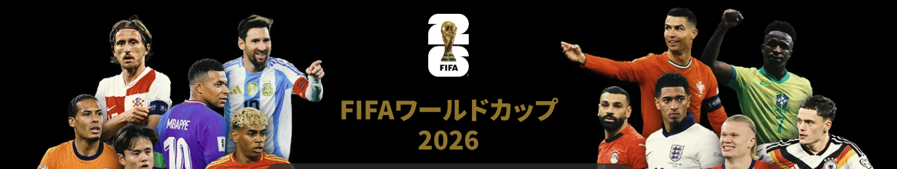

注目のハイライトHIGHLIGHTS

 スペイン 0–0 アルゼンチン
スペイン 0–0 アルゼンチン ▷ ハイライト 3本
▷ ハイライト 3本
 フランス 4–6 イングランド
フランス 4–6 イングランド ▷ ハイライト 4本
▷ ハイライト 4本 イングランド 1–2 アルゼンチン▷ ハイライト 4本
イングランド 1–2 アルゼンチン▷ ハイライト 4本 フランス 0–2 スペイン▷ ハイライト 3本
フランス 0–2 スペイン▷ ハイライト 3本最新ニュースNEWS

スペイン 0–0 アルゼンチン▷ ハイライト 3本フランス 4–6 イングランド▷ ハイライト 4本イングランド 1–2 アルゼンチン▷ ハイライト 4本フランス 0–2 スペイン▷ ハイライト 3本